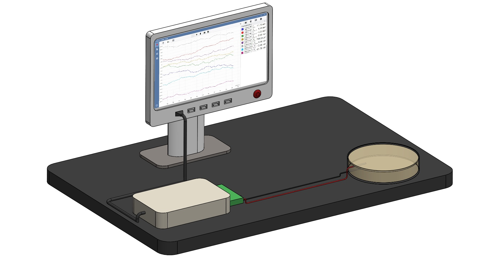
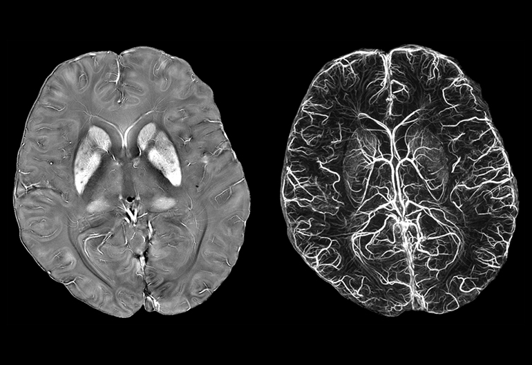
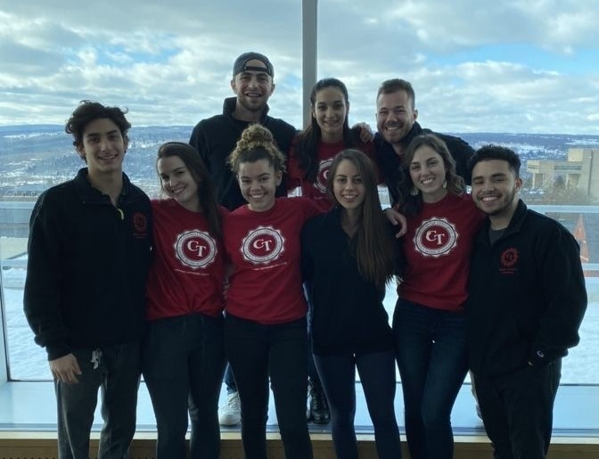

Anja Samardzija
Senior studying Electrical and Computer Engineering at Cornell University with a passion for Biomedical Signal Processing and Machine Learning
Looking for new research opportunities
Senior studying Electrical and Computer Engineering at Cornell University with a passion for Biomedical Signal Processing and Machine Learning
Looking for new research opportunities
I work on a project in the intersection of fungi and robotics. In the beginning stages of this project, I collected fungi electrical signals utilizing microscaled electrodes (Figure 1). Following the data collection, I cleaned the data from noise with various Fourier filters. I analyze the amplitudes and frequencies of the cleaned fungi electrical signals and utilize these cleaned signals as input to supervised machine learning models. Furthermore, I use the raw fungi signals as input to unsupervised machine learning models. The signals analyzed are utilized to power a robotics system.
Figure 1. Set-up for measuring electrical signals from petri dish with fungi.
I work on a project in which I utilize classical machine learning models to diagnose neurodegenerative diseases based on brain pathology. More specifically, I pre-proceess T1W and QSM MRI images (Figure 2) and extract regions of interest from these images. Next, I use these regions of interest as input to a Random Forest classifier whose performance is enhanced through feature selection. This model outperforms other similar models in the diagnosis of neurodegenerative diseases.
Figure 2. Example of a QSM MRI brain scan.
Over the last 3 years, I have worked as a Calculus 1 and Calculus 2 Course Assistant. My tasks include grading weekly homework assignments and holding office hours.
I serve on the Cornell Tradition Student Advisory Committee. Through this organization, I volunteer 80-100 hours a semester at various service events which include soup kitchens, elementary schools, etc. Additionally, I organize annual philanthropic events which average 100 participants.
Figure 3. Cornell Tradition Student Advisory Committee I was the leader for two years.

LinkedIn profile needed to view
Anja Samardzija's LinkedIn Profile
Python, MATLAB, UNIX, Arduino, C, C++, R
English, Serbian
Russian (limited proficiency), Italian (limited proficiency)
FreeSurfer, FSL, SPM, Eagle, SolidWorks, Microsoft Office
leadership, problem-solving, communication, critical thinking